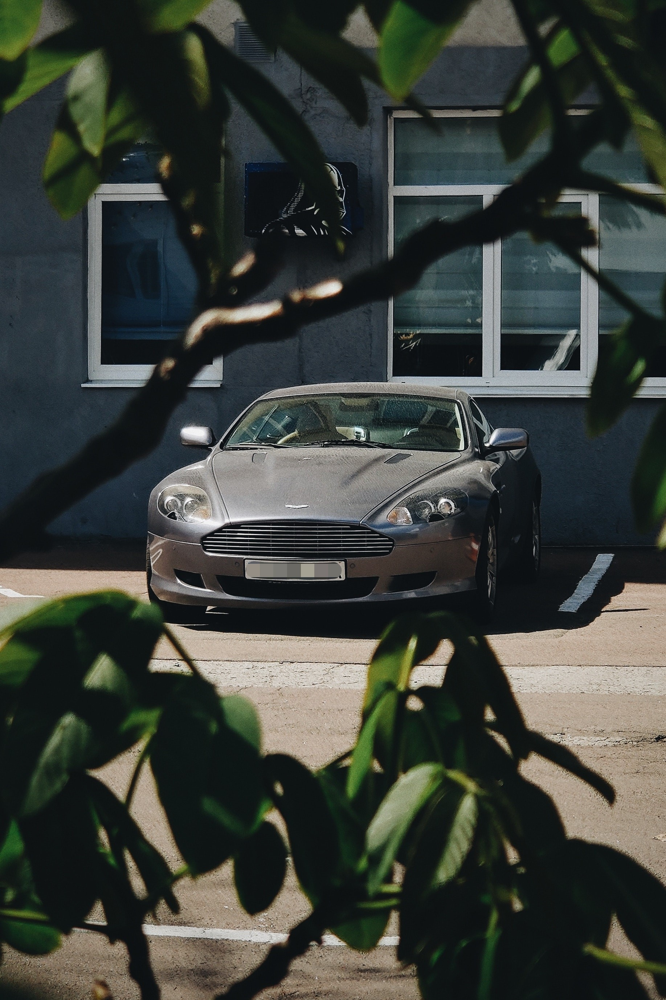
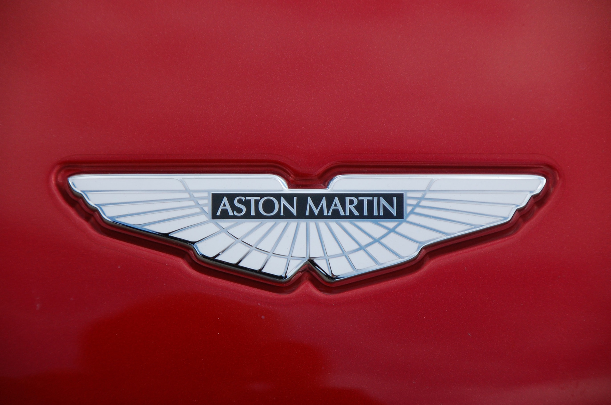
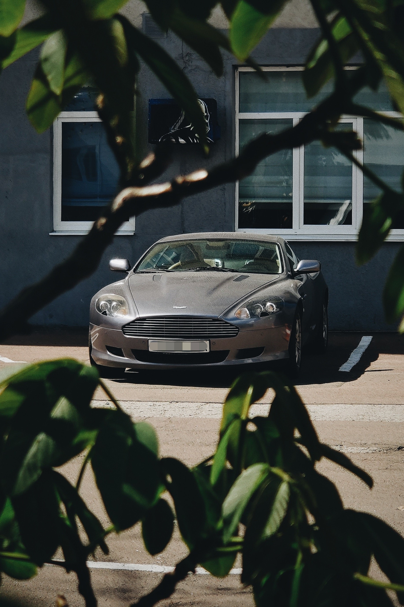
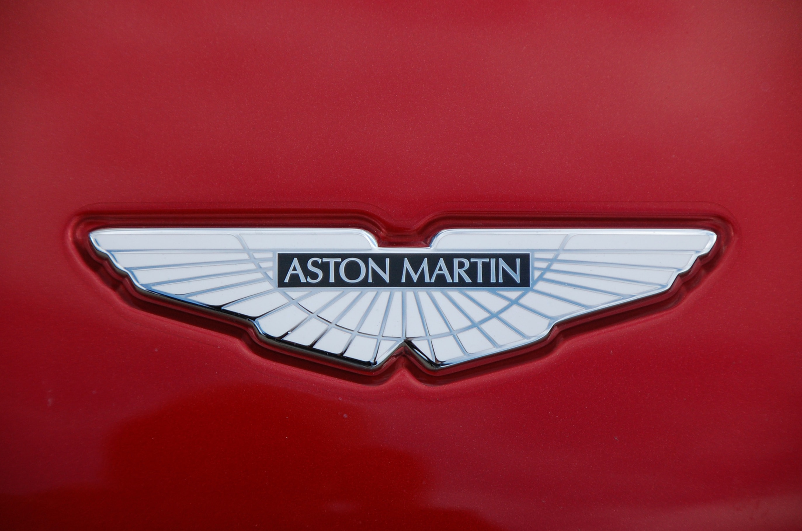
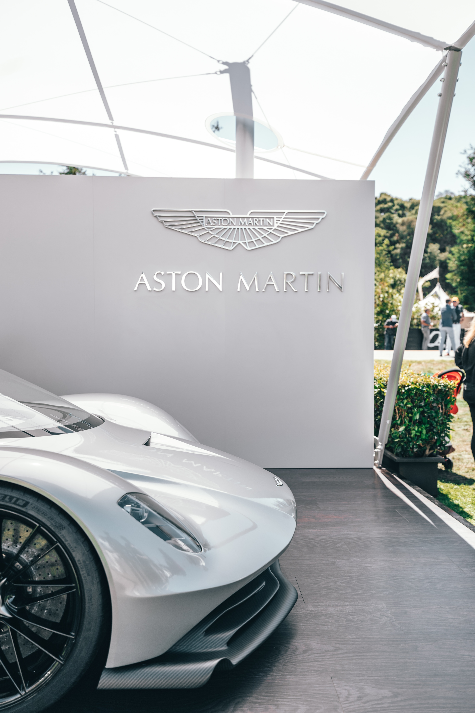
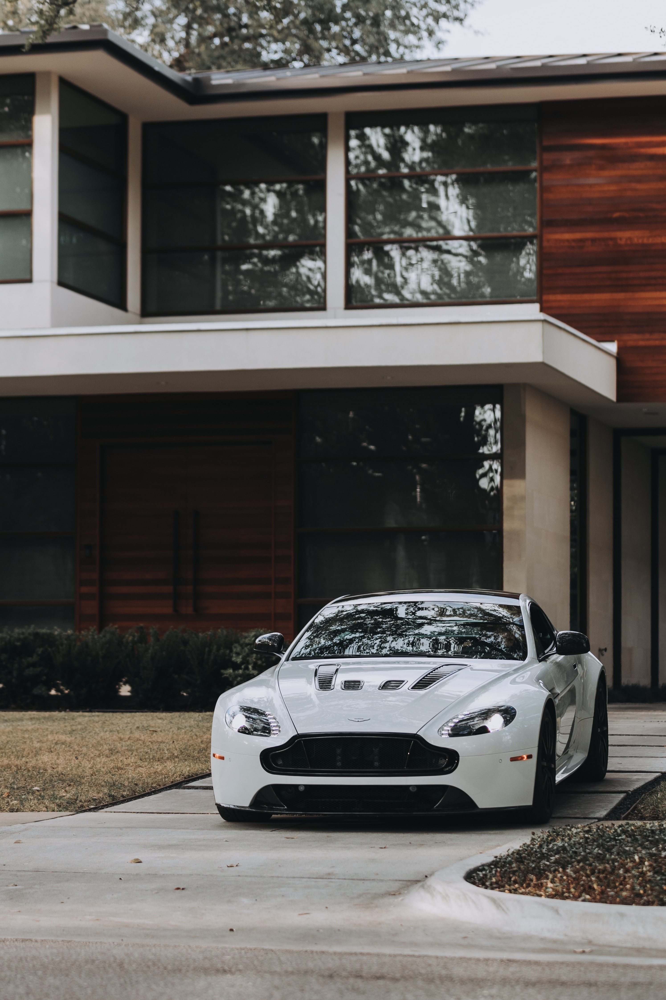
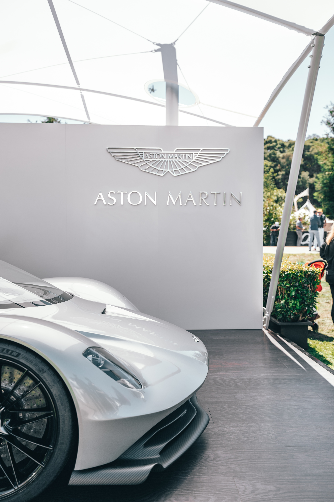
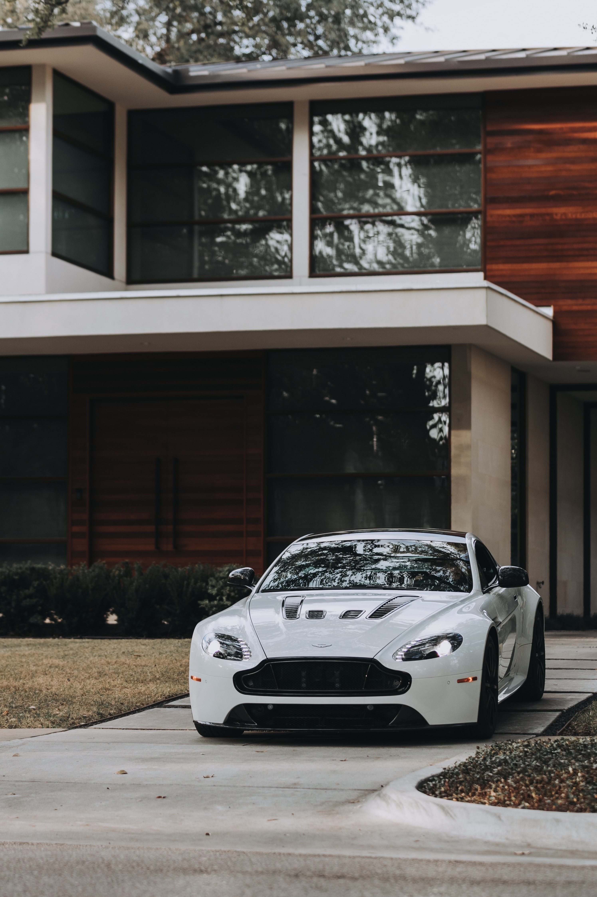

Aston Martin

HISTÓRIA
A história da Aston Martin começa em 1913, quando Lionel Martin e Robert Bamford procuraram criar sua própria linha de veículos devido ao fato de Martin ser um piloto entusiasta em Aston Hills. Seu primeiro veículo continha um motor Coventry-Simplex de quatro cilindros com o chassi de um Isotta-Fraschini 1908, e após grande deliberação ao escolher como chamar o carro, eles invocaram o nome de 'Aston Martin' – uma combinação de Aston Hills e o nome do cofundador Lionel Martin.
A Aston Martin conhece o luxo e o sucesso de perto, seja nas pistas de corrida, seja nas telas de cinema.
IMAGENS
 




 



Aston Martin Aramco Cognizant
Competição está no DNA da Aston Martin. A marca estreou nas pistas em 1922 e alcançou grande sucesso em corridas de longa duração, como prova a vitória nas lendárias 24 Horas de Le Mans em 1959. Em 2005, quase 50 anos depois, a Aston Martin Racing foi relançada e segue competindo - e vencendo - nas principais categorias de endurance.
A Aston Martin F1 foi criada em 1959. A equipe inglesa esteve por pouco tempo na Fórmula 1, abandonando o grid em 1960. Mais de 60 anos depois, em 2021, a escuderia retornou à maior competição do automobilismo mundial, assumindo a antiga Racing Point.
Com essa nova chegada ao grid atual a equipe já chegou a correr com dois campeões mundiais. Sebastian Vettel, anunciando sua aposentadoria na equipe em 2022. Logo em seguida anunciando a chegada de Fernando Alonso (bicampeão). Seu segundo piloto é Lance Stroll, filho de Lawrence Stroll, atualmente chefe da Aston Martin.
Atualmente a Aston é uma equipe de ponta no automobilismo, chegando a ocupar o 2° lugar no campeonato de construtres da categoria de F1. Mas ultimamente perdeu a posição para a equipe Ferrari, ficando então em 3° lugar.